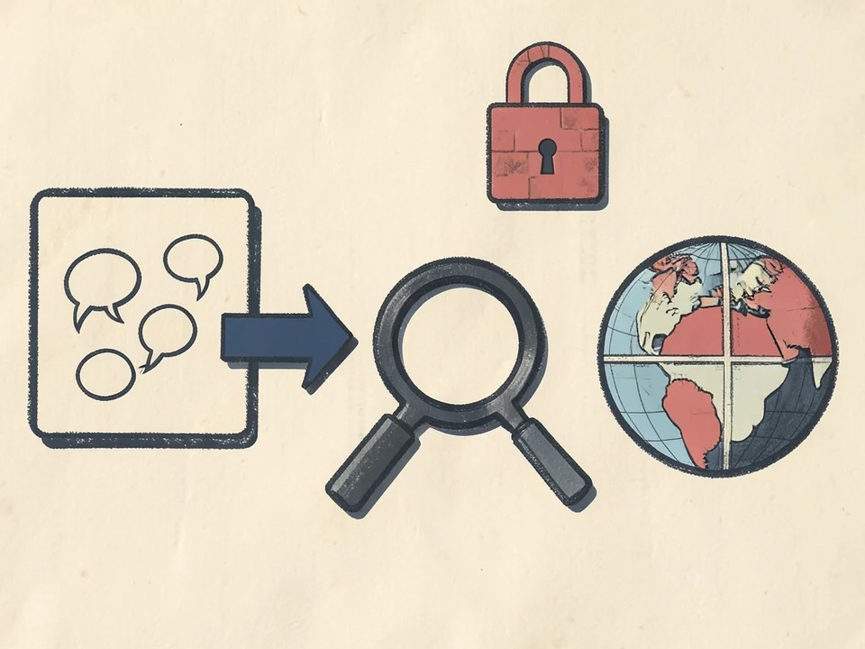

The issue appears to have originated from Claude’s “share chat” feature, which allows users to create links that enable anyone with the assigned URL view a conversation or project.
A daily briefing on artificial intelligence—selected for signal, written for clarity.
The stories shaping AI today, selected and condensed.

The issue appears to have originated from Claude’s “share chat” feature, which allows users to create links that enable anyone with the assigned URL view a conversation or project.
OpenAI's Hugging Face breach has reignited debate over AI alignment and control, exposing competing views on whether increasingly capable AI should be better aligned, better contained, or both.
Anthropic founder and CEO Dario Amodei made his views clear about open-weight models and China's growing AI capabilities.
Meta on Monday said it is rolling out its Meta AI chatbot within Threads' DMs, giving users a way to chat with the AI assistant.
Cursor says India is now its third-largest market globally and plans to expand local hiring and enterprise sales.
3 items in this desk.
Google’s AI Overviews now appear in 43% of searches, underscoring how quickly AI-generated answers are becoming the default way people discover information online.
Companies without their own models — or without a layer of AI infrastructure known as AI gateways to separate their prompts from the model itself — will be in trouble, Nadella says.
Microsoft bolstered its AI cybersecurity offerings this week with the launch of its first AI security model and a new security platform.